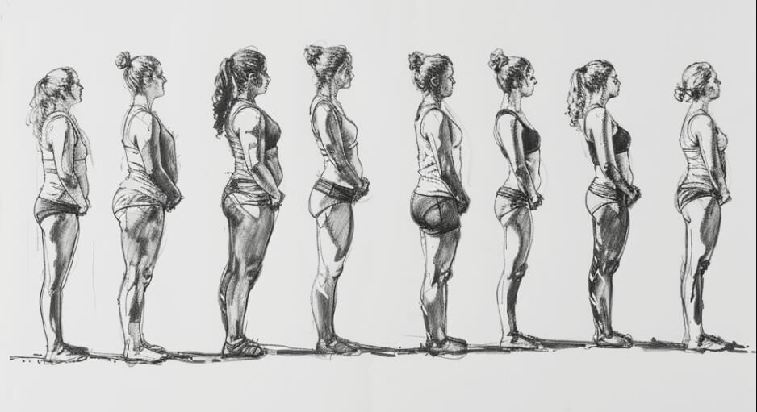
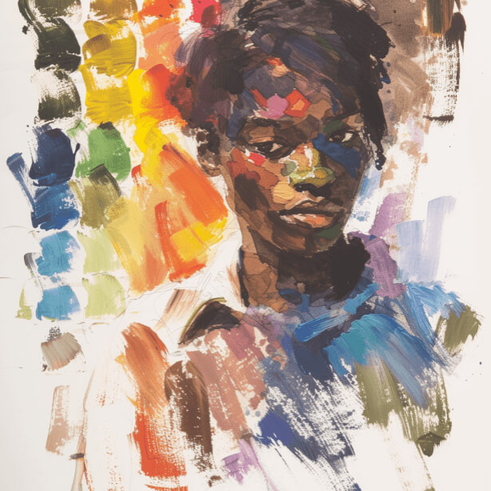
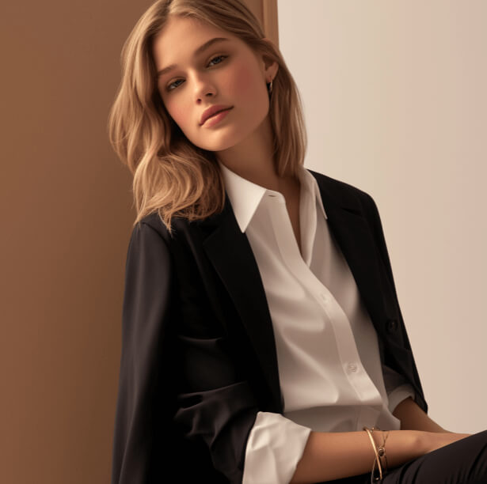
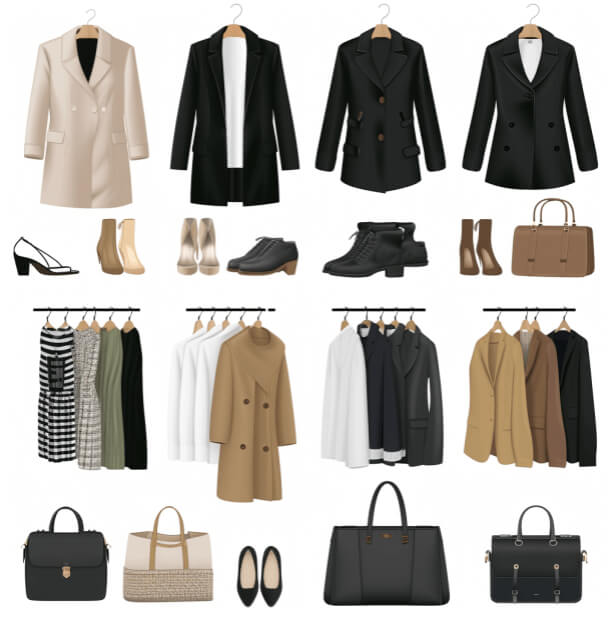
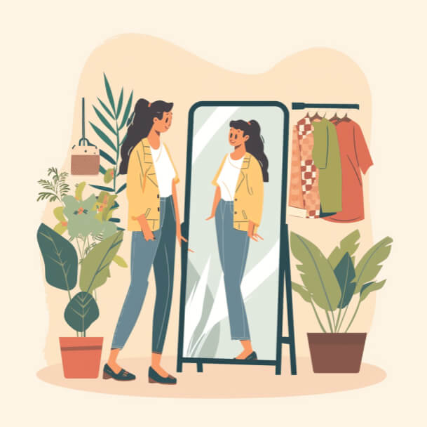

8 Claves para Encontrar tu Estilo Personal
¿Por qué es tan importante encontrar tu estilo personal en el mundo de la moda actual? En un mundo donde la moda a menudo viene con etiquetas rígidas y tendencias pasajeras, desarrollar un estilo personal que resuene con tu identidad única es tanto empoderador como esencial. Se trata de vestir a la verdadera tú, esquivando las tallas estándar de la industria y los imprescindibles de temporada, y abrazando prendas que acentúen tu individualidad y confianza. El estilo personal no se trata de encajar en moldes predefinidos; es sobre crear un look que refleje tu esencia, aspiraciones y los contornos irrepetibles de tu historia. Esta guía está dedicada a cada mujer que cree en el poder de la autoexpresión a través de la moda, ofreciendo consejos para ayudarte a crear un guardarropa tan único y dinámico como tú.
-
Descubre tus Inspiraciones de Estilo
Descubrir tu estilo personal comienza con un viaje de inspiración. Se trata de sumergirte en un mundo de estéticas visuales para descubrir lo que realmente resuena contigo. Empieza creando un tablero de inspiración, ya sea digitalmente en plataformas como Pinterest o con un clásico corcho y recortes de revistas. Fija todo lo que te llame la atención: texturas, colores, siluetas y conjuntos completos. No te limites solo a la moda; el arte, la arquitectura, la naturaleza y las épocas vintage también pueden despertar ideas.
A medida que tu tablero evoluciona, surgirán patrones. Puede que te atraiga la elegancia sin esfuerzo del estilo minimalista, las declaraciones audaces de las piezas vanguardistas o el atractivo atemporal de los estilos clásicos. Este collage de inspiraciones servirá como tu brújula estilística, guiando tus elecciones de moda hacia un guardarropa que no solo se vea bien, sino que se sienta profundamente correcto.
-
Entiende tu Forma Corporal
Entender tu forma corporal es un paso crucial para desarrollar un estilo personal que no solo te favorezca, sino que también te haga sentir segura y empoderada. Aquí tienes una guía estructurada para ayudarte a navegar por los diferentes tipos de cuerpo, con consejos prácticos para cada uno:
 -
Crea una Paleta de Colores Firma
Descubrir los colores que armonizan con tus tonos naturales es como un artista seleccionando la paleta perfecta para una obra maestra. Tu tono de piel, color de cabello e incluso el tono de tus ojos juegan un papel crucial en esta sinfonía de colores. Pero, ¿cómo navegar por el interminable espectro de colores para encontrar aquellos que resuenen profundamente?
Primero, se trata de entender los conceptos básicos de la teoría del color y cómo se aplica a la moda. Los tonos cálidos pueden brillar en tonos terrosos, mientras que los tonos fríos resplandecen en tonos joya. Pero no dejes que estas reglas te limiten; son solo guías para comenzar tu exploración.
Segundo, piensa en los colores que te hacen sentir segura y feliz. Estas respuestas emocionales son indicadores clave de que estás en el camino correcto. Recuerda, este viaje se trata de expresar el verdadero tú, no de encajar en moldes preestablecidos.
La experimentación es tu aliada. Mezcla y combina, sal de tu zona de confort y observa cómo diferentes colores interactúan con tu paleta natural. No se trata solo del color en sí, sino de cómo te hace sentir. Cuando usas colores que te complementan, no solo te ves bien; te sientes empoderada y radiante, igual que cuando llevas tu traje de poder favorito.
-
Invierte en Básicos de Calidad
En el tapiz del estilo personal, los básicos de calidad son los hilos que mantienen todo unido. Estas son las piezas clave de tu guardarropa, aquellas que superan las temporadas y tendencias, ofreciendo un lienzo para que tu narrativa de estilo se despliegue.
Calidad sobre cantidad es el mantra aquí. Una prenda bien confeccionada, ajustada a tu medida como un guante, dice mucho. Se trata de prendas que abrazan tus curvas de manera perfecta, tejidos que se sienten como una segunda piel y cortes que celebran tu silueta.
Crear un guardarropa atemporal significa invertir en prendas que ofrezcan versatilidad y durabilidad. Piensa en una camisa blanca impecable, el par perfecto de pantalones a medida o ese vestido negro que siempre te queda bien. Estas son las bases de tu estilo, listas para ser adornadas con tu toque personal.
La verdadera belleza de los básicos de calidad radica en su capacidad de transformación. Combinados con accesorios atrevidos o superpuestos con maestría, sirven como la base para infinitas posibilidades de estilo. Este enfoque no solo eleva tu estilo, sino que también refleja un compromiso con la moda sostenible, alejándote del encanto efímero de la moda rápida hacia un guardarropa más consciente y personalizado.
 -
Sé Fiel a tu Estilo Personal
Auténticamente Tú: Manteniéndote Fiel a tu Viaje de Estilo Personal
En un mundo inundado de tendencias pasajeras y directrices de moda en constante cambio, ser fiel a tu estilo personal es tanto una rebelión como una declaración de amor propio. Se trata de saber quién eres y expresar esa identidad con confianza y orgullo. La industria de la moda rápida puede ser tentadora, pero considera elegir ropa personalizada.
Tu estilo personal es un reflejo de tu viaje, tus experiencias y tu perspectiva única del mundo. Debe resonar con tu esencia interior, no con los caprichos de la industria de la moda. Abraza los estilos que te hagan sentir poderosa, elegante y únicamente tú.